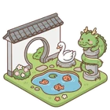

夜遊「圍」園

攤開地圖中…
夜遊「圍」園
天水圍社區地圖 · 撳貼紙睇故事
0/0
設定
動畫效果
完整
減少
開卡自動播聲
打開故事卡時試聽 3 秒
輕鐵列車
夜遊路線
入夜先會出現
地圖清晰度
省電：放大時少啲細節
自動
省電
搖動手機傾斜貼紙
印仔紀錄
清除
地方聲音：
來源同授權
（CC0／公有領域）
開啟搖動效果？
打開故事卡時搖動手機，貼紙會跟住傾斜，好似真貼紙咁有立體感。
iPhone 要你授權先可以讀方向感應：撳「開啟」後，請喺系統視窗揀
「允許」
。
資料只喺手機入面用嚟郁貼紙，唔會儲存或上傳。
隨時可以喺右上角設定關返。
唔使喇
開啟
搖一搖
到此
一遊
聲效製作中